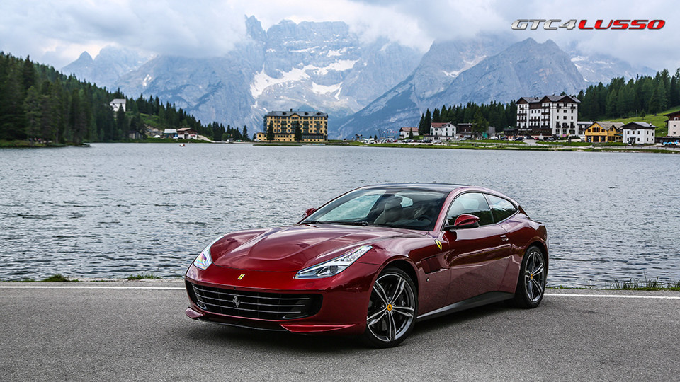

Động cơ V12 6.3L-công suất tối đa 681 mã lực, mô-men xoắn cực đại 697 Nm
Hộp số tự động ly hợp kép 7 cấp
Tăng tốc từ 0-100 km/h chỉ trong vòng 3,4 giây
Vận tốc tối đa đạt 334 km/h.
Mức tiêu thụ nhiên liệu trung bình là 15L/100km